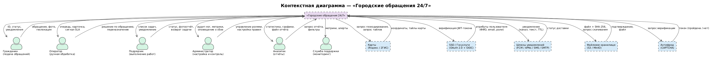

Контекст и границы SoI системы «Городские обращения 24/7»
Содержание
- Тема
- Цель системы
- Внешние сущности
- Потоки данных и событий
- Границы системы
- Ключевые ограничения и допущения
1. Тема
Система обработки обращений граждан «Городские обращения 24/7»
2. Цель системы
Цель системы — обеспечить прозрачный, быстрый и контролируемый процесс приёма, маршрутизации и исполнения обращений граждан по проблемам городской инфраструктуры, ЖКХ и благоустройства.
Система должна:
- предоставить гражданам удобный инструмент подачи обращений с фото и геолокацией, отслеживания статуса и получения уведомлений;
- автоматизировать классификацию проблем и назначение ответственных подрядчиков для сокращения времени реакции;
- обеспечить операторов и администраторов средствами ручной обработки, контроля качества и аудита;
- дать аналитикам возможность оценивать эффективность подрядчиков, выявлять проблемные зоны и готовить отчёты для управленческих решений;
- гарантировать сохранность данных и устойчивость сервиса даже при отказах внешних зависимостей.
Система является операционным координационным инструментом: она не заменяет подрядные организации, а организует их работу, фиксирует исполнение и обеспечивает обратную связь с гражданами.
3. Внешние сущности
3.1 Пользователи и их поведение
Пользователи — роли, непосредственно взаимодействующие с системой через интерфейсы.
Гражданин
Поведение: Гражданин обращается в систему при обнаружении проблемы в городской среде. Он открывает мобильное или веб-приложение, описывает проблему, прикладывает фотографию и указывает геолокацию (автоматически или вручную). После отправки гражданин периодически проверяет статус обращения и получает уведомления о смене статуса. При необходимости оставляет дополнительные комментарии в диалоге с оператором. Ожидает, что обращение будет зарегистрировано быстро, обработано в разумный срок и завершено с подтверждением результата.
Триггеры: обнаружение проблемы в городской инфраструктуре. Частота: нерегулярно, по ситуации. Ключевые ожидания: скорость регистрации, прозрачность статуса, уведомления без необходимости самостоятельно уточнять.
Аналитик
Поведение: Аналитик работает с системой в плановом режиме — еженедельно или по запросу администрации города. Открывает аналитический модуль, выбирает период, район, категорию проблемы или конкретного подрядчика. Просматривает агрегированные данные: динамику обращений, карту проблемных зон, статистику выполнения. Формирует отчёты и экспортирует их для представления руководству или загрузки во внешние системы.
Триггеры: плановая отчётность, запрос администрации, выявленная аномалия. Частота: несколько раз в неделю. Ключевые ожидания: актуальность данных, возможность фильтрации и экспорта, корректность агрегатов.
3.2 Исполнители и их поведение
Исполнители — роли, выполняющие операционные задачи внутри процесса обработки обращений.
Оператор
Поведение: Оператор работает в системе в течение рабочей смены в режиме постоянного мониторинга очереди. Просматривает новые обращения, применяет фильтры по статусу, категории и району. При необходимости вручную корректирует категорию, исправляет описание или геолокацию, переназначает подрядчика. Объединяет дублирующие обращения. Отклоняет спам и явно некорректные заявки с обязательным указанием причины. При поступлении сообщения от гражданина отвечает через карточку обращения. Следит за приближением и нарушением SLA, эскалирует проблемные задачи.
Триггеры: поступление нового обращения в очередь, ошибка автоматической маршрутизации, возврат обращения от подрядчика. Частота: непрерывно в течение рабочей смены. Ключевые ожидания: удобная фильтрация, возможность быстрого редактирования и переназначения, видимость нарушений SLA в реальном времени.
Подрядчик
Поведение: Подрядчик работает в системе преимущественно с мобильного устройства в полевых условиях. Получает push-уведомление о новой задаче, открывает список назначенных обращений, изучает адрес, описание и фотографии. Подтверждает принятие задачи, выезжает на место и меняет статус на «В работе». После выполнения загружает фотоотчёт, добавляет комментарий и переводит обращение в статус «Выполнено». При невозможности выполнить работу (ошибочное назначение, вне зоны ответственности) возвращает задачу оператору с обязательным указанием причины. В условиях нестабильного интернет-соединения работает в офлайн-режиме — изменения синхронизируются при восстановлении связи.
Триггеры: уведомление о новой задаче, приближение срока SLA. Частота: в течение рабочего дня, нерегулярно по задачам. Ключевые ожидания: видеть только свои задачи, простое изменение статуса, возможность работы без стабильного интернета.
Администратор
Поведение: Администратор настраивает и контролирует корректность работы системы. Управляет учётными записями пользователей, назначает и отзывает роли. Конфигурирует правила автоматической маршрутизации, категории обращений, зоны ответственности подрядчиков и параметры SLA. Просматривает аудит-лог для расследования инцидентов. Мониторит состояние сервисов и принимает меры при деградации или сбоях. В исключительных ситуациях вручную управляет обращениями.
Триггеры: onboarding нового сотрудника или подрядчика, инцидент, изменение организационной структуры, плановое обслуживание. Частота: несколько раз в неделю плюс реактивно при инцидентах. Ключевые ожидания: полный контроль над ролями и правилами, доступ к аудит-логам, инструменты мониторинга.
3.3 Внешние интеграции и их обоснование
Картографический сервис (Яндекс.Карты / 2ГИС)
Назначение: автоматическое определение координат пользователя и обратное геокодирование (адрес → координаты); отображение карты проблемных зон в аналитическом модуле.
Обоснование выбора: использование готового картографического API исключает разработку собственной геоинфраструктуры и существенно сокращает затраты. Оба провайдера (Яндекс.Карты, 2ГИС) покрывают всю территорию РФ, поддерживают геокодирование и предоставляют SDK для мобильных приложений.
Режим деградации: при недоступности сервиса система переключается на ручной выбор точки на упрощённой карте или ввод текстового адреса; результаты геокодирования кэшируются в Redis (TTL 24 ч) для снижения зависимости от внешнего API.
Шлюзы уведомлений (Push / SMS / Email)
Назначение: доставка уведомлений гражданам о смене статуса обращения; оповещение подрядчиков о новых задачах и приближении SLA.
Используются три канала: Push-уведомления через Firebase Cloud Messaging (Android) и Apple Push Notification Service (iOS); SMS через агрегатора; Email через SMTP-шлюз.
Обоснование выбора: построение собственной инфраструктуры доставки сообщений (FCM, APNs, SMPP) технически сложно и экономически нецелесообразно. Использование внешних шлюзов обеспечивает надёжную доставку с гарантиями SLA провайдера.
Режим деградации: при отказе одного канала система автоматически переключается на резервный (Push → SMS → Email). Уведомления ставятся в очередь (Kafka) и доставляются после восстановления шлюза; потеря уведомлений — не более 0,5%.
Система аутентификации (Госуслуги / SSO / Active Directory)
Назначение: аутентификация граждан через подтверждённую учётную запись Госуслуг (OAuth 2.0 + OIDC); аутентификация операторов и подрядчиков через корпоративный SSO или Active Directory.
Обоснование выбора: авторизация через Госуслуги повышает доверие к обращениям и снижает количество анонимных спам-заявок, поскольку учётная запись привязана к реальному физическому лицу. Система не хранит пароли и не выдаёт первичные токены — только проверяет JWT-токены и получает подтверждённые атрибуты пользователя (ФИО, email, телефон).
Режим деградации: при недоступности IdP новые сессии не создаются; существующие JWT остаются действительными до истечения срока exp.
Файловое хранилище (S3-совместимое: MinIO / Yandex Object Storage)
Назначение: хранение фотографий от граждан и фотоотчётов от подрядчиков; хранение экспортированных аналитических отчётов.
Обоснование выбора: объектное хранилище обеспечивает горизонтальное масштабирование, дедупликацию и надёжность без необходимости управлять файловой системой. S3-совместимый API позволяет при необходимости переключаться между провайдерами (MinIO для on-premise, Yandex Object Storage для облака) без изменения кода.
Режим деградации: при недоступности хранилища система сохраняет текст обращения без фото, уведомляет пользователя о возможности загрузить фото позже.
Антифрод-система (CAPTCHA)
Назначение: защита от автоматизированной отправки спама и фейковых обращений при регистрации и подаче заявок с подозрительной активностью.
Обоснование выбора: встроенная реализация CAPTCHA требует значительных усилий по поддержке и уступает специализированным решениям по эффективности. Использование внешнего сервиса (например, reCAPTCHA v3 или Yandex SmartCaptcha) минимизирует операционную нагрузку.
Режим деградации: при недоступности CAPTCHA-сервиса система применяет усиленный rate limiting на уровне API-шлюза.
4. Потоки данных и событий
В таблицах ниже показаны все информационные потоки между системой и внешними сущностями.
Пользователи
| Внешняя сущность | Направление | Данные / события |
|---|---|---|
| Гражданин | → Система | Карточка обращения (описание, категория, фото, геолокация); запрос статуса; комментарий оператору |
| Гражданин | ← Система | Уникальный ID и статус «Новое»; уведомления о смене статуса; ответ оператора; предупреждение о возможном дубликате |
| Оператор | → Система | Решение по обращению (редактирование, переназначение, отклонение, объединение дублей); ответ гражданину |
| Оператор | ← Система | Очередь обращений с фильтрацией; карточка обращения; уведомление о нарушении SLA; уведомление о новом обращении в очереди |
| Подрядчик | → Система | Принятие задачи; смена статуса («В работе», «Выполнено»); фотоотчёт и комментарий; возврат задачи оператору с причиной |
| Подрядчик | ← Система | Список назначенных задач; уведомление о новой задаче; напоминание о приближении SLA |
| Администратор | → Система | Управление пользователями и ролями; настройка правил маршрутизации, категорий, зон ответственности, SLA; запрос аудит-лога |
| Администратор | ← Система | Список пользователей; аудит-лог; метрики мониторинга сервисов; оповещение о сбое |
| Аналитик | → Система | Запрос отчёта с фильтрами (период, район, категория, подрядчик); запрос экспорта |
| Аналитик | ← Система | Агрегированная статистика; таблицы, графики, карта проблемных зон; файл отчёта (XLSX / CSV) |
Внешние системы
| Внешняя сущность | Направление | Данные / события |
|---|---|---|
| Картографический сервис (Яндекс / 2ГИС) | → Система | Координаты по адресу (геокодирование); тайлы карты для отображения |
| Картографический сервис (Яндекс / 2ГИС) | ← Система | Запрос геокодирования (текстовый адрес → координаты); запрос тайлов карты |
| SSO / Госуслуги / Active Directory | → Система | JWT-токен с атрибутами пользователя (ФИО, email, телефон, роли) |
| SSO / Госуслуги / Active Directory | ← Система | Запрос верификации токена при каждом запросе через API-шлюз |
| Шлюзы уведомлений (FCM / APNs / SMS / SMTP) | → Система | Статус доставки уведомления (доставлено / ошибка / устройство недоступно) |
| Шлюзы уведомлений (FCM / APNs / SMS / SMTP) | ← Система | Сформированное уведомление (канал, получатель, текст, приоритет, TTL) |
| Файловое хранилище (S3 / MinIO) | → Система | Подтверждение загрузки; файл при скачивании (фото, отчёт) |
| Файловое хранилище (S3 / MinIO) | ← Система | Файл на загрузку с контрольной суммой SHA-256; запрос на скачивание по подписанному URL |
| Антифрод-система (CAPTCHA) | → Система | Токен верификации (пройдена / не пройдена / оценка риска) |
| Антифрод-система (CAPTCHA) | ← Система | Запрос проверки при подозрительной активности (регистрация обращения, аномальная частота) |
Контекстная диаграмма

5. Границы системы
5.1 В зоне ответственности системы (внутри границ)
Пользовательские интерфейсы
| Компонент | Что обеспечивает |
|---|---|
| Веб-приложение (гражданин) | Форма создания обращений, просмотр статуса и истории, загрузка фото, отображение карты |
| Мобильное приложение (гражданин) | Те же функции + офлайн-сохранение черновиков, GPS-координаты, push-уведомления |
| Приложение подрядчика | Список задач, изменение статусов, загрузка фотоотчётов, офлайн-режим с очередью синхронизации |
| Интерфейс оператора | Таблица обращений с фильтрацией и поиском, карточка для редактирования, ручная маршрутизация, объединение дублей |
| Административная панель | Управление пользователями и ролями, настройка правил маршрутизации, категорий и подрядчиков |
| Аналитический модуль | Дашборды, отчёты с фильтрацией, карта проблемных зон, экспорт данных |
Серверные сервисы
| Компонент | Что обеспечивает |
|---|---|
| API-шлюз (Gateway) | Единая точка входа, проверка JWT, rate limiting, маршрутизация запросов к микросервисам |
| Сервис обращений | Приём, валидация, антиспам-проверка, сохранение в БД, присвоение ID и начального статуса |
| Сервис маршрутизации | Автоматическая классификация (ML / правила), выбор подрядчика, fallback-очередь оператора |
| Сервис статусов (Workflow) | Конечный автомат переходов, контроль допустимых изменений по ролям, фиксация времени |
| Сервис уведомлений | Формирование и отправка уведомлений через внешние шлюзы, очередь, повторные попытки |
| Сервис фото и файлов | Загрузка, проверка формата и размера, вычисление контрольных сумм SHA-256, интеграция с S3 |
| Сервис геоданных | Абстракция над картографическим API, кэширование результатов, fallback на ручной ввод |
| Сервис дубликатов | Проверка похожих обращений по геолокации, категории и тексту; предупреждение пользователя |
| Сервис аудита | Неизменяемый аудит всех действий (кто, что, когда, IP, ID обращения); криптографическая цепочка |
| Сервис аналитики и отчётов | Агрегация данных, формирование витрин, онлайн- и асинхронные отчёты, кэширование |
| SLA Monitor | Отслеживание сроков исполнения, генерация напоминаний и эскалаций при нарушении SLA |
Инфраструктурные компоненты
| Компонент | Что обеспечивает |
|---|---|
| Брокер сообщений (Kafka) | Асинхронный обмен событиями между сервисами, гарантия доставки at-least-once |
| База данных обращений (PostgreSQL) | Реляционное хранение обращений, статусов, назначений, истории изменений |
| База данных справочников | Категории проблем, подрядчики, зоны ответственности, SLA-правила, шаблоны уведомлений |
| Кэш (Redis) | Сессии, справочники, результаты геокодирования, очереди фоновых задач |
| Сервис мониторинга | Сбор метрик (Prometheus), логирование (ELK), дашборды (Grafana), алерты |
5.2 Вне зоны ответственности системы (вне границ)
| Внешняя сущность | Почему вне границ | Режим деградации |
|---|---|---|
| Картографический API (Яндекс / 2ГИС) | Готовый внешний сервис; разработка собственной геоинфраструктуры экономически нецелесообразна | Ручной ввод адреса / точки на карте; кэш геокодирования |
| Шлюзы уведомлений (FCM / APNs / SMS / SMTP) | Сторонние агрегаторы; система формирует запросы, но не реализует физическую доставку | Очередь с ретраями; переключение Push → SMS → Email |
| Система аутентификации (Госуслуги / SSO / AD) | Система не хранит пароли и не выдаёт токены — только верифицирует и получает атрибуты | Существующие сессии сохраняются до истечения JWT; новые сессии недоступны |
| Файловое хранилище (S3 / MinIO) | Внешняя объектная инфраструктура; система интегрируется с ней через API | Обращение сохраняется без фото; загрузка доступна позже |
| Антифрод-система (CAPTCHA) | Внешний специализированный сервис; система только вызывает его API | Усиленный rate limiting на уровне API-шлюза |
| Физическое выполнение ремонта | Осуществляется подрядными организациями вне системы | — |
| Принятие управленческих решений | Находится в компетенции администрации города; система предоставляет данные, но не принимает решения | — |
| Резервное копирование на уровне носителей | Ответственность DevOps / инфраструктурной команды; система инициирует бэкап БД, но не управляет ленточными архивами | — |
6. Ключевые ограничения и допущения
Ограничения
- Система не является юридически значимой платформой документооборота — фиксация факта обращения не является официальным административным заявлением.
- Система не хранит пароли пользователей и не реализует собственный механизм первичной аутентификации: вся аутентификация выполняется через внешний IdP/SSO.
- Система не осуществляет физическую доставку push-уведомлений и SMS — это обязанность внешних шлюзов. Отказ шлюза не считается нарушением SLA платформы при условии корректного перехода в режим деградации.
- Картографические сервисы являются внешними зависимостями; система не гарантирует их доступность и не отвечает за точность геокодирования сторонних провайдеров.
- Система не принимает управленческих решений вместо администрации города — аналитические данные носят рекомендательный характер.
Допущения
- Граждане имеют доступ к интернету с мобильного или стационарного устройства.
- Подрядные организации располагают смартфонами с установленным приложением и принимают задачи в цифровом виде.
- SSO / Госуслуги содержат актуальные учётные данные граждан, операторов и администраторов.
- Картографический провайдер (Яндекс.Карты или 2ГИС) обеспечивает геокодирование адресов на всей целевой территории города.
- Внешние шлюзы уведомлений поддерживают доставку по электронной почте, push и SMS с подтверждением статуса.
- Объектное хранилище поддерживает S3-совместимый API и обеспечивает доступность не ниже 99,9% в месяц.